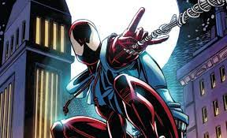

Historia Ben Reilly
El profesor de biología Miles Warren estaba obsesionado con su estudiante Gwen Stacy, y quedó devastado cuando esta falleció durante una batalla entre el Duende Verde y Spider-Man. Habiendo realizado experimentos con la clonación durante años, Miles deseaba recrear a Stacy, pero su dolor se convirtió en demencia cuando accidentalmente mató su asistente Anthony Seba, para impedir que delatara sus planes. Miles llegó a convencerse de que otra persona había cometido el asesinato, diseñando una personalidad criminal, el Jackal. Sospechando que Peter Parker había estado involucrado en la muerte de Gwen, acabó por descubrir que el joven era Spider-Man, y se decidió a clonarle para hacerle sufrir por la muerte de Gwen. Eventualmente, tras varios intentos de clonación, que fracasaron debido a degeneración celular espontanea, Warren creó clones estables. Tras secuestrar al amigo de Parker, Ned Leeds, envió al clon de Spider-Man, quien pensaba ser el verdadero, contra Spider-Man. Ambos se enfrentaron para rescatar a Ned Leeds de una bomba. No estando dispuesto a arriesgarse, Miles envió a un clon del Jackal a observar la batalla, pero este se volvió contra él y falleció salvando la vida a Ned. Los dos Spider-Man quedaron inconscientes por la explosión, y el verdadero Jackal apareció.
Deseando arrebatarle a Parker todo lo que le era querido haciéndole creer que era el clon, Miles inyectó al Spider-Man que creía real con una droga que simulara su muerte. Ignoraba que su nuevo ayudante, Seward Trainer, le había engañado para que inyectara al clon, siguiendo las instrucciones de Norman Osborn, el cual había sido dado por muerto. Cuando el verdadero Spider-Man se despertó, arrojó el cuerpo del clon a una chimenea, de la cual el Jackal lo extrajo. Con sus recuerdos originales implantados, el clon volvió a la vida y regresó a casa, para descubrir que Peter se encontraba allí. Pensando correctamente que era el impostor, el clon adoptó el nombre de Ben Reilly basándose en los tíos de Peter, Ben y May Reilly Parker, y pasó los siguientes cinco años viajando.
En un giro de los acontecimientos, más adelante, unas pruebas revelaron que Peter era el verdadero clon. Peter, confuso y con Mary Jane embarazada, le cedió el título de Spider-Man a Ben. La etapa de Reilly como sustituto de Parker, que incluyó la posesión del simbionte Carnage entre otras muchas aventuras, terminó cuando se revelo que Peter no era el verdadero clon, sino Reilly. Fue asesinado por el Duende Verde, artífice de la confusa relación entre Peter y Ben. Su legado de Scarlet Spider llevó a convertirse al bien a su antiguo enemigo, y clon, Kaine. Años después, Ben fue resucitado y tomó la identidad del Jackal para fundar New U Technologies con el propósito de reanimar a través de la clonación a todas las personas que murieron directa o indirectamente por culpa de Spider-Man..